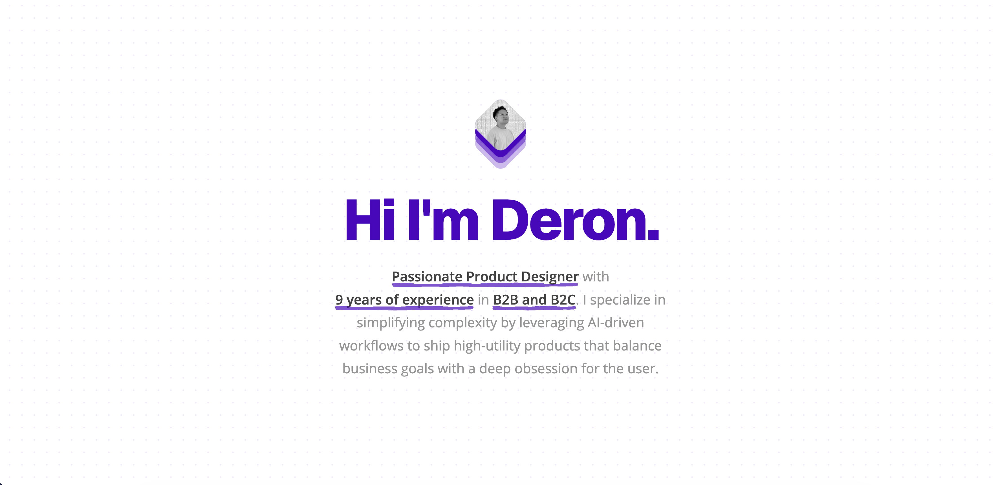

Process & reflection
AI in my design process
I've been working AI into my design process for about a year. It helps with some things. It slows me down on others.
Built with Claude Code
Things I've shipped using AI
I use Claude Code, Cursor, Google Gemini, and Nano Banana Pro, both for client work and just to see what's possible. The projects below were built entirely through prompting.

This Portfolio
Every animation and interaction on this site (the TOC indicator, the section icon draws, the scroll fade-ins) was built through prompting, not written by hand.
 In progress
In progress
Retro Arcade
A browser-based arcade with playable games, a score system, and a retro aesthetic. Built entirely through prompting with Claude Code.
Thesis Prototype
A functional prototype built from my grad design thesis. Real interactions and logic, not just static screens.


Process
How I use AI in my work
Research
When I'm diving into a new space, I use AI to get a handle on the jargon, what competitors are doing, and what users actually care about. Clueless to context, as fast as possible.
Planning & Validation
I treat AI as a partner that pokes holes in my early flows. It catches things I'd miss on my own before I commit to a direction.
Writing
For technical docs, UX copy, or usability test scripts, I use AI to get the first draft down. More time on the vibe, less time staring at a blank cursor.
Concept & Design
When I need to explore directions fast, I prompt for a handful of layout approaches and use the strongest ones as a starting point. Most get scrapped, but the ones that don't get me to a decision faster.
Prototyping
I use tools like Cursor to build prototypes that actually behave like the real thing. Enough logic so users can explore freely, not just click through a rigid path.
Data & Analytics
After usability sessions, I use AI to comb through the raw notes and find the patterns. The stakeholder debrief gets a lot easier when the story's already there.
Tradeoffs
Where it helps vs. where it doesn't
- Mass changes across a prototype
- Building and iterating on components
- Micro-interactions and animations
- Summarising research
- UX writing and documentation
- Knocking out a backlog of QA changes
- Visual polish and fine tweaks
- Keeping design consistent
- Spatial accuracy and layout
- Design inspiration (I still go external for that)
- Quick single-element edits
- Struggles with vague or open-ended prompts
"AI gets me to 60–70% quickly. Getting that last 10–30% of polish often takes longer through prompting than just doing it myself."